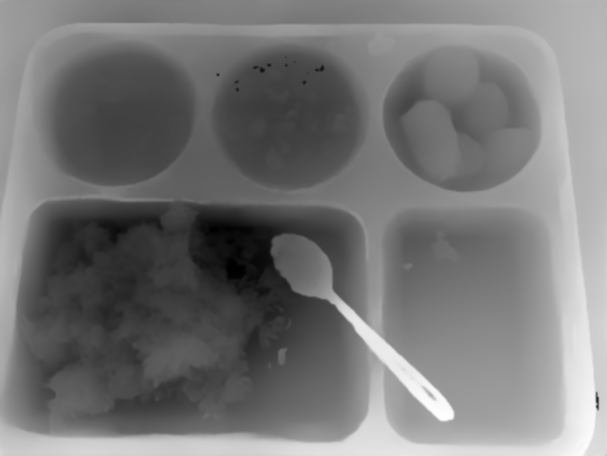
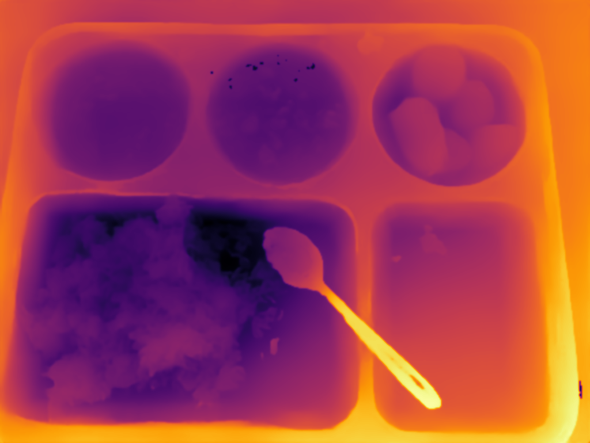
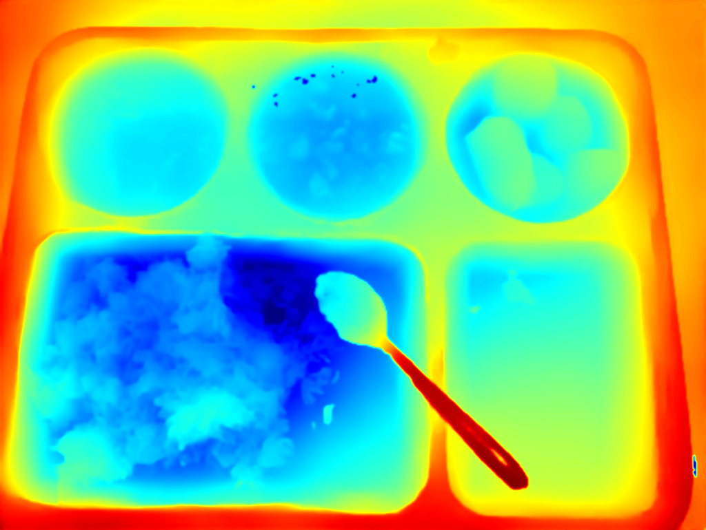
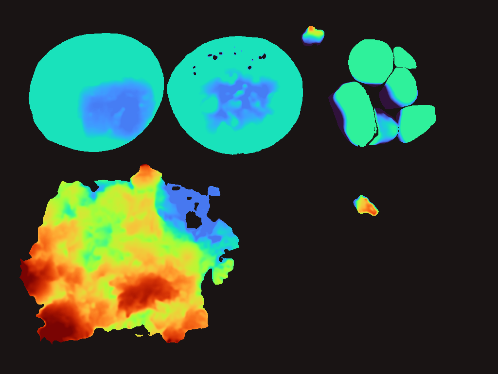
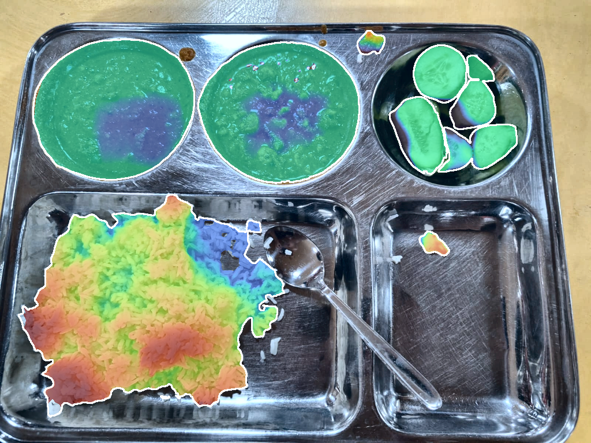
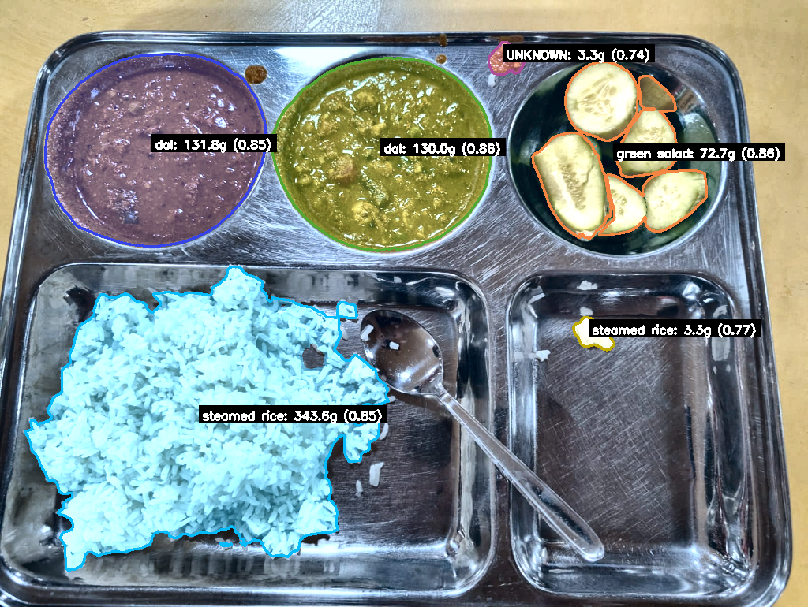

{
"resolution": "1600x1204",
"channels": 3,
"dtype": "uint8",
"expected_items": [
"dal",
"steamed rice",
"green salad"
],
"plate_profile": null,
"debug": true
}





[]
{
"item_id": "green salad_1",
"area_pixels": 30266,
"estimated_height_cm": 1.805,
"volume_estimate_ml": 69.2,
"density": 1.05,
"mass_g": 72.7,
"class_label": "green salad",
"class_confidence": 0.8805,
"depth_stability": 1.0,
"scale_confidence": 0.7,
"composite_confidence": 0.8583,
"prior_applied": true,
"diagnostics": {
"original_sam3_query": "cucumber",
"candidate_labels": [
"cucumber"
],
"menu_matching_result": "green salad",
"final_food_label": "green salad",
"confidence": 0.8805,
"uncertainty": 0.1195,
"original_mask_id": "mask_00",
"grouped_instance_id": "inst_2",
"fragment_count": 6,
"decision_reason": "FRAGMENT_GROUPED_6_PIECES"
},
"volume_diagnostics": {
"food_name": "green salad",
"fallbacks_applied": [],
"raw_pixel_count": 30266,
"archetype": "sliced_salad",
"archetype_justification": "Discrete planar vegetable slices with calibrated cut-thickness floor (green salad)",
"pixel_area_method": "plate_calibrated_uniform",
"mean_pixel_area_cm2": 0.0012667097616940737,
"food_surface_area_cm2": 38.34,
"valid_pixel_count": 30122,
"clipped_pixel_count": 144,
"valid_pixel_ratio": 0.9952,
"height_stats_cm": {
"min": -13.722,
"p5": -11.364,
"p25": -10.135,
"median": -9.012,
"mean": -8.943,
"p75": -8.187,
"p95": -5.647,
"max": -3.067,
"std": 1.646
},
"slice_thickness_floor_cm": 0.75,
"raw_integrated_vol_ml": 69.19,
"compartment_capped": false,
"final_volume_ml": 69.2
},
"fragment_count": 1
}{
"item_id": "dal_2",
"area_pixels": 53211,
"estimated_height_cm": 1.775,
"volume_estimate_ml": 119.6,
"density": 1.087,
"mass_g": 130.0,
"class_label": "dal",
"class_confidence": 0.8794,
"depth_stability": 1.0,
"scale_confidence": 0.7,
"composite_confidence": 0.8578,
"prior_applied": true,
"diagnostics": {
"original_sam3_query": "dal tadka",
"candidate_labels": [
"dal tadka"
],
"menu_matching_result": "dal",
"final_food_label": "dal",
"confidence": 0.8794,
"uncertainty": 0.1206,
"original_mask_id": "mask_01",
"grouped_instance_id": "inst_0",
"fragment_count": 1,
"decision_reason": "SINGLE_INSTANCE"
},
"volume_diagnostics": {
"food_name": "dal",
"fallbacks_applied": [
"WELL_DEPTH_FLOORED_2.0CM"
],
"raw_pixel_count": 53211,
"archetype": "liquid_in_well",
"archetype_justification": "Conformal fluid filling molded compartment well; flat free surface (dal)",
"pixel_area_method": "plate_calibrated_uniform",
"mean_pixel_area_cm2": 0.0012667097616940737,
"food_surface_area_cm2": 67.4,
"valid_pixel_count": 52730,
"clipped_pixel_count": 481,
"valid_pixel_ratio": 0.991,
"height_stats_cm": {
"min": -22.659,
"p5": -15.743,
"p25": -14.882,
"median": -13.982,
"mean": -13.327,
"p75": -12.512,
"p95": -8.253,
"max": -5.603,
"std": 2.281
},
"effective_well_depth_cm": 2.0,
"raw_integrated_vol_ml": 119.61,
"compartment_capped": false,
"final_volume_ml": 119.6
},
"fragment_count": 1
}{
"item_id": "dal_3",
"area_pixels": 54244,
"estimated_height_cm": 1.761,
"volume_estimate_ml": 121.0,
"density": 1.089,
"mass_g": 131.8,
"class_label": "dal",
"class_confidence": 0.8728,
"depth_stability": 1.0,
"scale_confidence": 0.7,
"composite_confidence": 0.8545,
"prior_applied": true,
"diagnostics": {
"original_sam3_query": "dal tadka",
"candidate_labels": [
"dal tadka"
],
"menu_matching_result": "dal",
"final_food_label": "dal",
"confidence": 0.8728,
"uncertainty": 0.1272,
"original_mask_id": "mask_02",
"grouped_instance_id": "inst_1",
"fragment_count": 1,
"decision_reason": "SINGLE_INSTANCE"
},
"volume_diagnostics": {
"food_name": "dal",
"fallbacks_applied": [
"WELL_DEPTH_FLOORED_2.0CM"
],
"raw_pixel_count": 54244,
"archetype": "liquid_in_well",
"archetype_justification": "Conformal fluid filling molded compartment well; flat free surface (dal)",
"pixel_area_method": "plate_calibrated_uniform",
"mean_pixel_area_cm2": 0.0012667097616940737,
"food_surface_area_cm2": 68.71,
"valid_pixel_count": 53965,
"clipped_pixel_count": 279,
"valid_pixel_ratio": 0.9949,
"height_stats_cm": {
"min": -13.634,
"p5": -13.384,
"p25": -12.85,
"median": -11.31,
"mean": -10.255,
"p75": -8.993,
"p95": -3.052,
"max": 0.566,
"std": 3.244
},
"effective_well_depth_cm": 2.0,
"raw_integrated_vol_ml": 120.98,
"compartment_capped": false,
"final_volume_ml": 121.0
},
"fragment_count": 1
}{
"item_id": "steamed rice_4",
"area_pixels": 115896,
"estimated_height_cm": 2.396,
"volume_estimate_ml": 351.7,
"density": 0.977,
"mass_g": 343.6,
"class_label": "steamed rice",
"class_confidence": 0.8549,
"depth_stability": 1.0,
"scale_confidence": 0.7,
"composite_confidence": 0.8457,
"prior_applied": true,
"diagnostics": {
"original_sam3_query": "rice",
"candidate_labels": [
"rice"
],
"menu_matching_result": "steamed rice",
"final_food_label": "steamed rice",
"confidence": 0.8549,
"uncertainty": 0.1451,
"original_mask_id": "mask_03",
"grouped_instance_id": "inst_3",
"fragment_count": 1,
"decision_reason": "SINGLE_INSTANCE"
},
"volume_diagnostics": {
"food_name": "steamed rice",
"fallbacks_applied": [
"MOUND_WELL_FLOORED_1.8CM"
],
"raw_pixel_count": 115896,
"archetype": "mounded_grain",
"archetype_justification": "Granular cohesive mound filling compartment bed + curved dome above rim (steamed rice)",
"pixel_area_method": "plate_calibrated_uniform",
"mean_pixel_area_cm2": 0.0012667096452787519,
"food_surface_area_cm2": 146.81,
"valid_pixel_count": 114643,
"clipped_pixel_count": 1253,
"valid_pixel_ratio": 0.9892,
"height_stats_cm": {
"min": -26.684,
"p5": -23.461,
"p25": -18.048,
"median": -16.338,
"mean": -16.492,
"p75": -14.497,
"p95": -11.213,
"max": -5.088,
"std": 3.353
},
"effective_well_depth_cm": 1.8,
"raw_integrated_vol_ml": 351.74,
"compartment_capped": false,
"final_volume_ml": 351.7
},
"fragment_count": 1
}{
"item_id": "UNKNOWN_5",
"area_pixels": 1465,
"estimated_height_cm": 1.78,
"volume_estimate_ml": 3.3,
"density": 1.0,
"mass_g": 3.3,
"class_label": "UNKNOWN",
"class_confidence": 0.7529,
"depth_stability": 0.75,
"scale_confidence": 0.7,
"composite_confidence": 0.7386,
"prior_applied": false,
"diagnostics": {
"original_sam3_query": "food",
"candidate_labels": [
"food"
],
"menu_matching_result": null,
"final_food_label": "UNKNOWN",
"confidence": 0.7529,
"uncertainty": 0.2471,
"original_mask_id": "mask_04",
"grouped_instance_id": "inst_5",
"fragment_count": 1,
"decision_reason": "ABSTAINED_INSUFFICIENT_EVIDENCE"
},
"volume_diagnostics": {
"food_name": "UNKNOWN",
"fallbacks_applied": [],
"raw_pixel_count": 1465,
"archetype": "chunky_suspension",
"archetype_justification": "Irregular 3D solids suspended in gravy within compartment (UNKNOWN)",
"pixel_area_method": "plate_calibrated_uniform",
"mean_pixel_area_cm2": 0.0012667096452787519,
"food_surface_area_cm2": 1.86,
"valid_pixel_count": 1465,
"clipped_pixel_count": 0,
"valid_pixel_ratio": 1.0,
"height_stats_cm": {
"min": -3.875,
"p5": -3.033,
"p25": -2.327,
"median": -1.903,
"mean": -1.942,
"p75": -1.486,
"p95": -0.976,
"max": -0.799,
"std": 0.601
},
"effective_well_depth_cm": 1.8,
"raw_integrated_vol_ml": 3.3,
"compartment_capped": false,
"final_volume_ml": 3.3
},
"fragment_count": 1
}{
"item_id": "steamed rice_6",
"area_pixels": 1345,
"estimated_height_cm": 2.395,
"volume_estimate_ml": 3.6,
"density": 0.93,
"mass_g": 3.3,
"class_label": "steamed rice",
"class_confidence": 0.7034,
"depth_stability": 1.0,
"scale_confidence": 0.7,
"composite_confidence": 0.7671,
"prior_applied": true,
"diagnostics": {
"original_sam3_query": "white rice",
"candidate_labels": [
"white rice"
],
"menu_matching_result": "steamed rice",
"final_food_label": "steamed rice",
"confidence": 0.7034,
"uncertainty": 0.2966,
"original_mask_id": "mask_05",
"grouped_instance_id": "inst_4",
"fragment_count": 1,
"decision_reason": "SINGLE_INSTANCE"
},
"volume_diagnostics": {
"food_name": "steamed rice",
"fallbacks_applied": [
"MOUND_WELL_FLOORED_1.8CM"
],
"raw_pixel_count": 1345,
"archetype": "mounded_grain",
"archetype_justification": "Granular cohesive mound filling compartment bed + curved dome above rim (steamed rice)",
"pixel_area_method": "plate_calibrated_uniform",
"mean_pixel_area_cm2": 0.00126670952886343,
"food_surface_area_cm2": 1.7,
"valid_pixel_count": 1345,
"clipped_pixel_count": 0,
"valid_pixel_ratio": 1.0,
"height_stats_cm": {
"min": -12.963,
"p5": -12.207,
"p25": -11.381,
"median": -11.09,
"mean": -11.223,
"p75": -10.911,
"p95": -10.767,
"max": -10.647,
"std": 0.442
},
"effective_well_depth_cm": 1.8,
"raw_integrated_vol_ml": 4.08,
"compartment_capped": true,
"cap_limit_ml": 3.6,
"final_volume_ml": 3.6
},
"fragment_count": 1
}


{
"food_items": [
{
"name": "green salad",
"volume_ml": 69.2,
"mass_g": 72.7,
"calories": 21.8,
"protein": 1.0,
"carbs": 3.4,
"fat": 0.5,
"confidence": 0.8583,
"class_label": "green salad",
"class_confidence": 0.8805,
"top_k": [
{
"label": "green salad",
"confidence": 0.8805,
"raw_similarity": 0.8805
}
],
"identification_status": "recognized",
"menu_match": true,
"matched_menu_item": "green salad",
"identification_confidence": 0.8805,
"segmentation_confidence": 0.8805,
"association_confidence": 1.0,
"menu_match_confidence": 1.0,
"depth_confidence": 1.0,
"scale_confidence": 0.7,
"diagnostics": {
"original_sam3_query": "cucumber",
"candidate_labels": [
"cucumber"
],
"menu_matching_result": "green salad",
"final_food_label": "green salad",
"confidence": 0.8805,
"uncertainty": 0.1195,
"original_mask_id": "mask_00",
"grouped_instance_id": "inst_2",
"fragment_count": 6,
"decision_reason": "FRAGMENT_GROUPED_6_PIECES"
},
"volume_diagnostics": {
"food_name": "green salad",
"fallbacks_applied": [],
"raw_pixel_count": 30266,
"archetype": "sliced_salad",
"archetype_justification": "Discrete planar vegetable slices with calibrated cut-thickness floor (green salad)",
"pixel_area_method": "plate_calibrated_uniform",
"mean_pixel_area_cm2": 0.0012667097616940737,
"food_surface_area_cm2": 38.34,
"valid_pixel_count": 30122,
"clipped_pixel_count": 144,
"valid_pixel_ratio": 0.9952,
"height_stats_cm": {
"min": -13.722,
"p5": -11.364,
"p25": -10.135,
"median": -9.012,
"mean": -8.943,
"p75": -8.187,
"p95": -5.647,
"max": -3.067,[
{
"step": "Input",
"message": "Original image saved",
"params": {
"resolution": "1600x1204"
},
"elapsed_s": 0.084,
"input_file": null,
"output_file": "original.png",
"timestamp": "2026-11-14T21:28:37.820440"
},
{
"step": "Pipeline",
"message": "Step 1 — Preprocessing & Perspective Warp",
"params": {},
"elapsed_s": null,
"input_file": null,
"output_file": null,
"timestamp": "2026-11-14T21:28:37.821440"
},
{
"step": "Quality Gate",
"message": "PASS",
"params": {
"blur_score": 351.14,
"tilt_deg": 25.0
},
"elapsed_s": null,
"input_file": null,
"output_file": null,
"timestamp": "2026-11-14T21:28:37.920617"
},
{
"step": "Preprocessing",
"message": "Resize applied",
"params": {
"original": "1600x1204",
"target_long_edge": 1024,
"scale": 0.64
},
"elapsed_s": 0.0008,
"input_file": null,
"output_file": "01_resized.png",
"timestamp": "2026-11-14T21:28:37.961188"
},
{
"step": "Preprocessing",
"message": "Gaussian blur applied",
"params": {
"kernel": 5
},
"elapsed_s": 0.0008,
"input_file": null,
"output_file": "02_denoised.png",
"timestamp": "2026-11-14T21:28:37.999391"
},
{
"step": "Preprocessing",
"message": "LAB color normalization applied",
"params": {},
"elapsed_s": 0.1433,
"input_file": null,
"output_file": "03_color_normalized.png",
"timestamp": "2026-11-14T21:28:38.182276"
},
{
"step": "Preprocessing",
"message": "CLAHE contrast enhancement applied",
"params": {
"clip_limit": 2.0,
"tile_grid": "8x8"
},
"elapsed_s": 0.0065,
"input_file": null,
"output_file": "04_contrast_enhanced.png",
"timestamp": "2026-11-14T21:28:38.226821"
},
{
"step": "Preprocessing",
"message": "Canny edge detection",
"params": {
"low": 50,
"high": 150
},
"elapsed_s": 0.0| Step | Message | Params | Time |
|---|---|---|---|
| Input | Original image saved | {"resolution": "1600x1204"} | 0.0840s |
| Pipeline | Step 1 — Preprocessing & Perspective Warp | — | — |
| Quality Gate | PASS | {"blur_score": 351.14, "tilt_deg": 25.0} | — |
| Preprocessing | Resize applied | {"original": "1600x1204", "target_long_edge": 1024, "scale": 0.64} | 0.0008s |
| Preprocessing | Gaussian blur applied | {"kernel": 5} | 0.0008s |
| Preprocessing | LAB color normalization applied | — | 0.1433s |
| Preprocessing | CLAHE contrast enhancement applied | {"clip_limit": 2.0, "tile_grid": "8x8"} | 0.0065s |
| Preprocessing | Canny edge detection | {"low": 50, "high": 150} | 0.0162s |
| Preprocessing | Warp skipped (no 4-pt contour) | {"warped": false} | — |
| Preprocessing | Complete | {"output_size": "1024x770"} | 0.4709s |
| Pipeline | Step 2 — Compartments & Scale | — | — |
| Compartment Detection | Detected 0 compartments | {"min_area_frac": 0.02, "max_area_frac": 0.9, "compartment_count": 0} | 0.0096s |
| Scale Calibration | Fallback to bbox-based calibration | {"cm_per_pixel": 0.03559, "method": "bbox"} | — |
| Compartment Detection | Scale computed | {"cm_per_pixel": 0.03559, "pixel_area_cm2": 0.00126671, "compartments": 0, "scale_confidence": 0.7} | 0.0664s |
| Pipeline | Step 3 — Depth Estimation | — | — |
| Depth Estimation | Depth Anything depth map computed (smoothed) | {"device": "cuda", "is_metric": true, "shape": [770, 1024], "min": -90.211, "max": -47.537} | 19.4174s |
| Depth Normalization | Surface normal plane subtracted from depth | {"baseline": -63.219, "fitted_plane": true, "is_metric": true} | 0.0364s |
| Depth Metric [cm] | Metric depth height in cm directly computed | {"cm_per_pixel": 0.03559, "min_cm": 0.0, "max_cm": 11.78, "mean_cm": 0.68} | 0.0030s |
| Depth Estimation | Complete | — | 19.5854s |
| Pipeline | Step 4–6 — SAM 3 Food Identification & Segmentation | — | — |
| SAM3 | Identified 6 food items (5 recognized, 0 unlisted, 0 uncertain) | — | 60.4687s |
| Pipeline | Step 7 — Volume & Mass Estimation | — | — |
| Volume Estimation | Computed mass for 6 items | {"total_items": 6} | 0.0649s |
| Pipeline | ✅ Pipeline complete | {"total_food_items": 6, "avg_confidence": 0.8203, "scale_method": "bbox"} | 80.9313s |